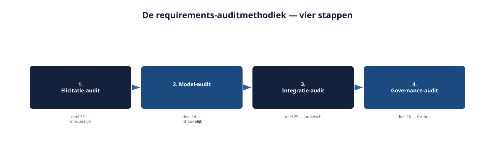

Deel 29 — Voorbereiding masterproef: de requirements-auditmethodiek
Slidedeck · Ductus-cursus Requirements Engineering · niveau 3 (expert) · deel 29 van 30 · 20 slides
Slide 1 — Voorbereiding masterproef
Voorbereiding masterproef
De requirements-auditmethodiek
Cursus Requirements Engineering — Niveau 3, deel 29
Ductus
Slide 2 — Vandaag
Vandaag
- Vier fragmenten, één geheel
- De requirements-auditmethodiek
- Bevindingen prioriteren
- Het auditrapport opstellen
- Voorbereiding op de verdediging
Slide 3 — Vier afzonderlijk correcte bevindingen.
Vier afzonderlijk correcte bevindingen.
Samen bekeken: een patroon dat in geen van de vier apart zichtbaar was.
Slide 4 — 1. De auditmethodiek
1. De auditmethodiek
Slide 5 — Vier stappen, in vaste volgorde
Vier stappen, in vaste volgorde
| Stap | Vraag | Deel |
|---|---|---|
| 1. Elicitatie-audit | Was de elicitatie gedegen? | 23 |
| 2. Model-audit | Sluiten de modellen aan? | 24 |
| 3. Integratie-audit | Past dit in de agile werkwijze? | 25 |
| 4. Governance-audit | Wat is de juridische status? | 26 |
Slide 6 — Figuur 29-1

Slide 7 — Inhoud → praktische bruikbaarheid → formele ruimte.
Inhoud → praktische bruikbaarheid → formele ruimte.
De volgorde is niet toevallig.
Slide 8 — Opdracht 29.1
Opdracht 29.1 — De vier stappen herkennen
Vier vragen.
Individueel · 15 minuten
Slide 9 — 2. Bevindingen prioriteren
2. Bevindingen prioriteren
Slide 10 — Drie criteria
Drie criteria
- Risico bij niet-handelen
- Omkeerbaarheid
- Afhankelijkheid van andere bevindingen
Slide 11 — Figuur 29-2

Slide 12 — Opdracht 29.2
Opdracht 29.2 — Bevindingen prioriteren
Vier bevindingen, één volgorde met argumentatie.
Tweetallen · 25 minuten
Slide 13 — 3. Het auditrapport
3. Het auditrapport
Slide 14 — Vijf secties
Vijf secties
- Samenvatting
- Aanpak
- Bevindingen per stap
- Geprioriteerde aanbevelingen
- Resterende onzekerheden
Slide 15 — Figuur 29-3

Slide 16 — Opdracht 29.3
Opdracht 29.3 — Een auditrapport-samenvatting schrijven
Max. 200 woorden, voor Hetty.
Individueel · 30 minuten
Slide 17 — 4. Voorbereiding op de verdediging
4. Voorbereiding op de verdediging
Slide 18 — Drie laatste punten
Drie laatste punten
- Ken je eigen zwakste bevinding
- Weet welke aanbeveling het meest ingrijpend is
- Oefen de samenvatting hardop
Slide 19 — Opdracht 29.4
Opdracht 29.4 — De zwakste bevinding identificeren
Individueel · 20 minuten
Slide 20 — Volgende keer: deel 30
Volgende keer: deel 30
De masterproef — boardsimulatie, vier rollen
Sluit niveau 3 en de hele cursus af.